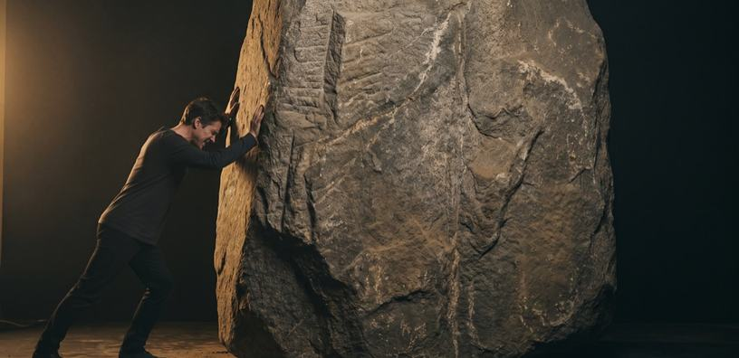

Ancient Atlas
A map of the deep past
0
Sites
0
With Video
0
Regions
⚖
Experiences ↗

Giza → Baalbek
6 stones
Your pull
It needs 5,000 lb
0.04 %
It does not move
2.5 tons. And that’s the smallest.
Six stones. The largest is 1,500.
Feel the weight →
0
Creators ↗
6
Articles ↗
8
Editions ↗
The Mammoth ·
$56
The Sabertooth ·
$18
Wear the deep past.
The sabertooth and the mammoth, drawn in gold.
Claim yours →
♥
Support ↗
✉
Contact ↗
Creators
17 voices
See all
↗
Where
Type
Filters
Overlays
View
Support the Atlas
→
Spot an error? Suggest a site →
©
2026
The Ancient Atlas
Zoom in to reveal
hidden sites
— the deeper you go, the more you discover
✕
Ancient Atlas
Weekly Site Report
0
Sites
0
Walkthroughs
0
Creators
Press
P
to exit broadcast
Press
P
for broadcast mode
Ancient Atlas
0
Ancient Sites Mapped
0
regions
0
creators
0
walkthroughs
0
expeditions
Every dot is a site you can explore
Rotate your phone for the interactive map
×
Best experienced on desktop.
The full interactive map, hover details, and climate timeline are designed for a larger screen.
×
Scroll to explore walkthroughs
⚖
New · Experience
Feel the Weight
Try to lift a 2.5-ton Giza block — you can’t.
→
⚖
Experiences
·
6
Articles
·
8
Editions
·
♥
Support
·
✉
Contact
The Editions
Wear the deep past.
Sabertooth & Mammoth, in gold · from $18
→
Tap a marker · rotate back for the feed
×